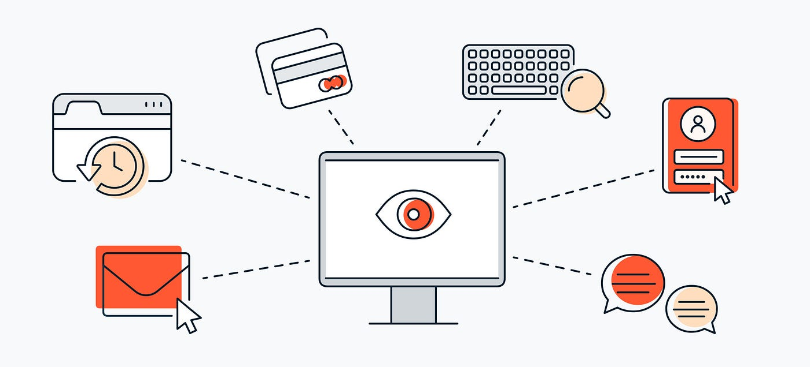
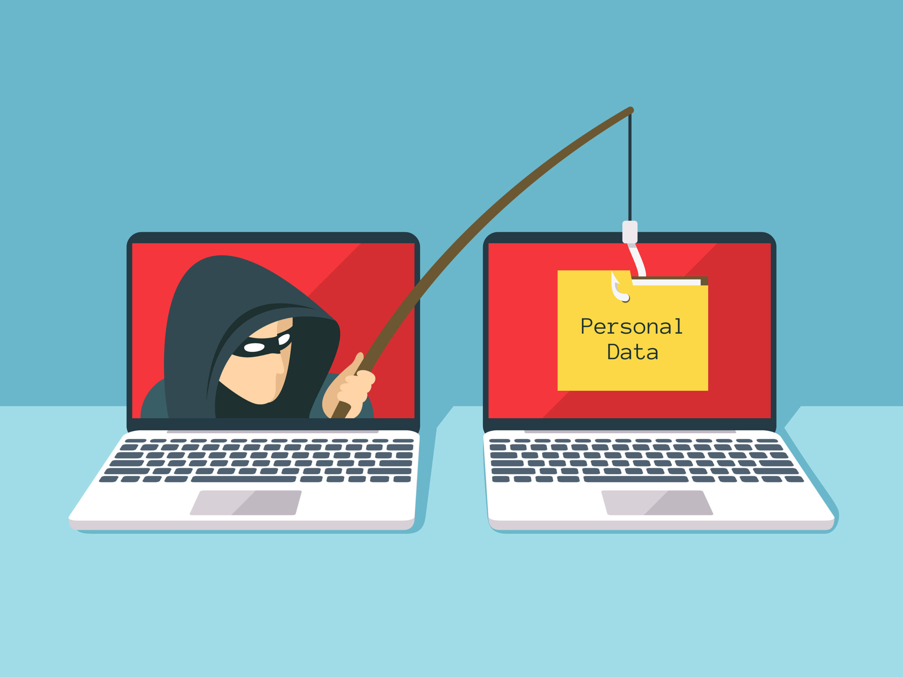
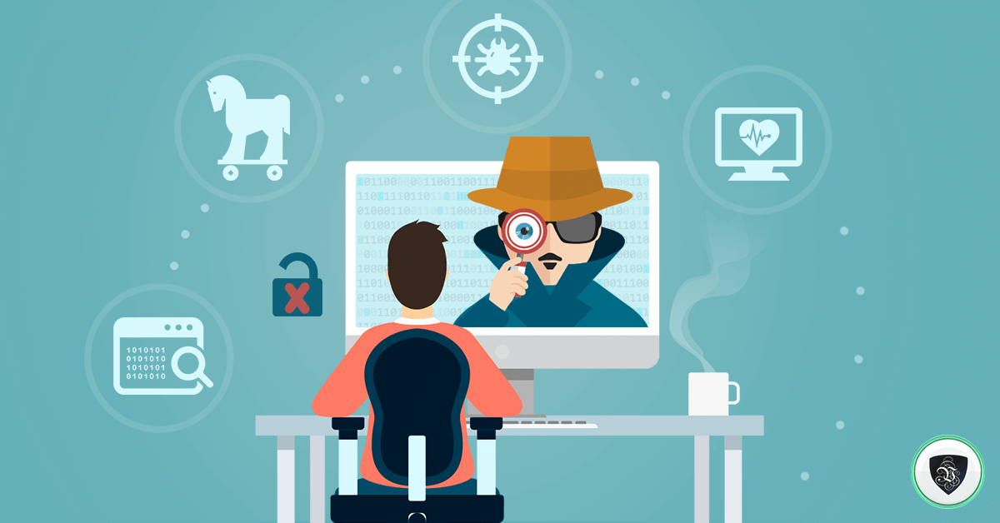

Spyware
Introduction
Define what spyware is as a type of malicious software that is designed
how to gather the information from different devices without the user of
the devices knowledge. Then I would briefly explain the actual purpose of
spyware, such as data theft, unauthorized access to peoples information,
and surveillance. Finally the impact spyware has on individuals an big
organizations, that are related to privacy concerns and money loss.
Types of Spyware
-
Keyloggers: The record keystrokes is to capture the sensitive
information such as password and card information.
Adware: Can track users activity that deliver it to the targeted
advertisements.
Trojans: To disguise legitimate software to collect data secretly.

Methods of Types of Infections
-

The free software that downloads and bundled programs.
Social engineering strategies.
To show how weak software
vulnerabilities are.
Removal and Prevention
-
To practices to best avoid the spyware that infectics a device, such as
being cautious to download the regular software updates.
It is also recommended to download anti-spyware tools and the
cybersecurity software.
The policies and regulations to spyware use and to prevent.

Conclusion
Spyware is a serious risk to device performance, security, and user
privacy. Users might not be aware that their information is being taken
until it is too late because it functions covertly. Staying safe from
these attacks requires knowing how spyware operates, spotting questionable
activities, and putting solid cybersecurity procedures in place.
